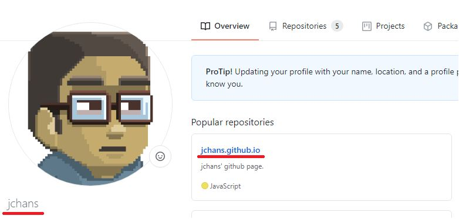
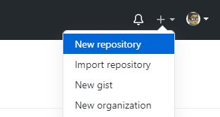
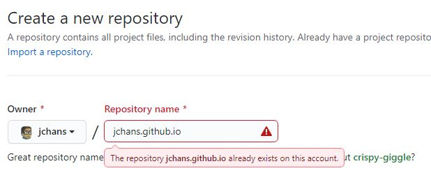
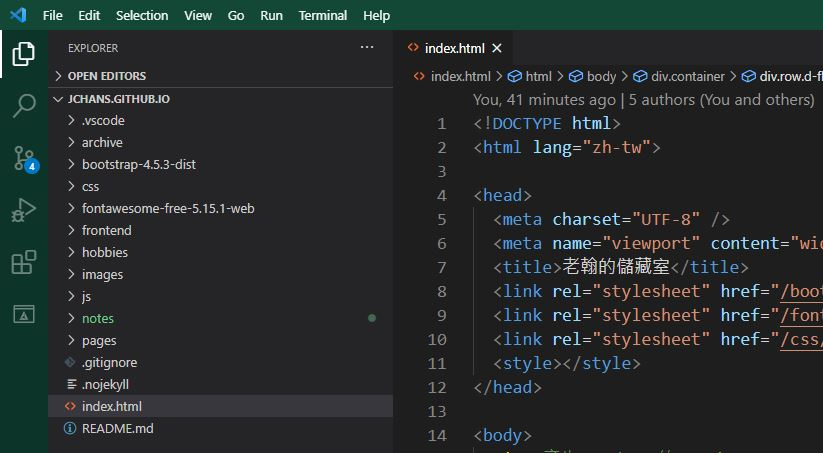

這篇簡介希望能跟大家說明如何使用 Github 提供的 Github Page 功能來製作靜態網頁。可用於製作作品集，整理資料等等。
就像這個頁面，是建立在我的 Github 帳號上，每個 Github 個人帳號都可以開一個這樣的頁面。你需要建立一個以你的帳號名稱開頭的 repo 。例如我的帳號名稱是「 jchans 」，所以我要建立的 repo 名稱就是「 jchans.github.io 」。如下圖。
要新增 repo 的話，在右上角有個「 + 」的符號，點選之後選「 New repository 」，如下圖。
新增 repo 的頁面，命名方式如下圖（我已經建好了，所以只是示意）。
接下來就是把這個 repo clone 到自己的電腦上，在根目錄新增 index.html ，之後就可以用這個 repo 當網址去找自己的頁面了。第一次建立或者剛 push 上去會需要稍等一下才會更新網頁的部份。
